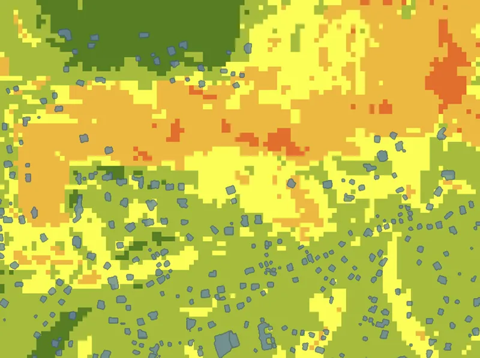
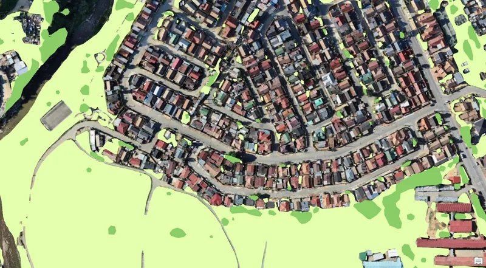
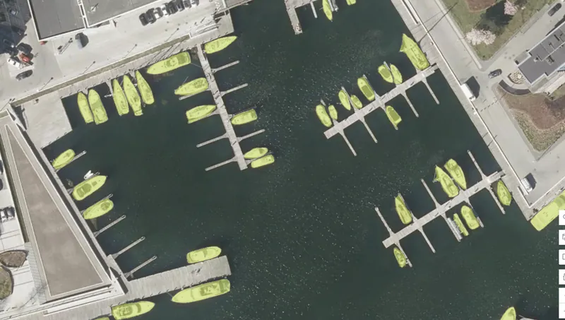
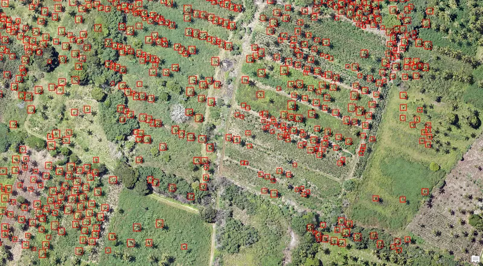

Projects / Applied GeoAI
GeoAI workflows: detection, classification and model adaptation
Five end-to-end deep-learning workflows on aerial and satellite imagery: building extraction, landslide exposure, land-cover classification, prompt-based object detection and palm-tree detection, each with interactive results.
Building footprint extraction with transfer learning
A pretrained building-footprint model was fine-tuned with locally labelled examples so that it recognises the building types in new aerial imagery, and its output was compared with that of the unadapted model.

- Created labelled training data for a deep-learning model
- Exported image chips and configured model training
- Fine-tuned a pretrained model (transfer learning)
Landslide exposure of buildings in Grenada
Buildings extracted from aerial imagery with a pretrained deep-learning model were combined with a raster landslide-susceptibility model, to show which buildings stand in higher-susceptibility zones across the island.

- Applied a pretrained deep-learning model to extract buildings from aerial imagery
- Built a multi-criteria raster model from four environmental inputs
- Combined vector and raster results in an exposure overlay
Land-cover classification and green-space extraction
A high-resolution orthomosaic was classified into nine land-cover classes with a deep-learning model; the classified raster was then turned into vector features and a dedicated green-space layer.

- Applied a deep-learning land-cover classification to high-resolution imagery
- Converted a classified raster into vector features
- Filtered classes into a thematic green-space layer
Prompt-based object detection with Text SAM
Boats in a marina were detected from the text prompt “boat” with the Text SAM model — no training data needed — and the raw output was cleaned of duplicate and very small false detections.

- Ran a prompt-based foundation model on aerial imagery
- Reviewed raw detections critically
- Removed duplicates with non-maximum suppression and filtered small polygons
Palm tree detection with a pretrained model
A ready-to-use palm-tree detection model from ArcGIS Living Atlas was applied to high-resolution imagery of a plantation, producing one bounding box per detected tree for counting and review.

- Selected and applied a pretrained detection model
- Produced a structured detection layer
- Reviewed results at different scales
Imagery and training data: Esri Learn ArcGIS path Try geospatial AI tools and models in ArcGIS. Basemaps © Esri and its data partners.